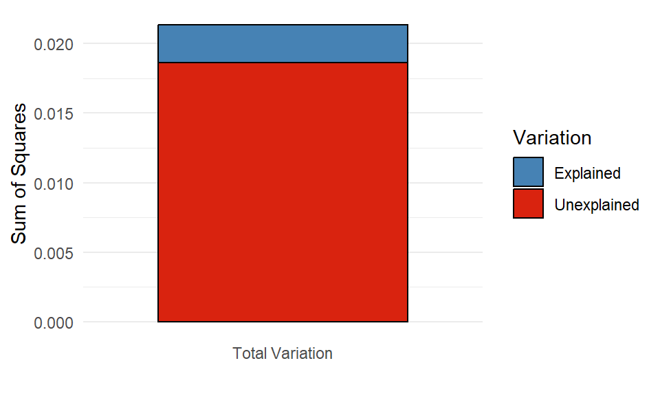

library(tidyverse)
snails <- read_csv("island-FL.csv")
snails |>
filter(species == "nux") |>
ggplot(aes(x = size, y = shape)) +
geom_point(color = "steelblue") +
theme_bw()
As an introductory example, let us load the Galápagos land snail data from Floreana Island (Section 4.2.2). We look only at individuals belonging to the species Naesiotus nux, and plot the shell shape measurement against the shell size measurement for each of them:
library(tidyverse)
snails <- read_csv("island-FL.csv")
snails |>
filter(species == "nux") |>
ggplot(aes(x = size, y = shape)) +
geom_point(color = "steelblue") +
theme_bw()
The question we want to answer using this plot is whether larger shells (indicated by larger values of the size variable) tend to also be more elongated (larger values of shape) or not. A casual look would suggest that this is indeed the case. In fact, one can plot these points together with a linear estimator (Section 7.3.4) showing the trend in the data:
snails |>
filter(species == "nux") |>
ggplot(aes(x = size, y = shape)) +
geom_point(color = "steelblue") +
geom_smooth(method = lm, se = FALSE, color = "goldenrod") +
theme_bw()
There are two questions we would like to answer:
Let us begin with the first of these questions. It is easy to get an approximately correct answer just by looking at the data. A straight line is defined by two parameters: its intercept and slope. The intercept is the point at which the line crosses the \(y\)-axis (i.e., its value when \(x\) is zero). The slope is the amount of rise or fall in \(y\), given one unit of increase in \(x\). We can estimate these quantities even without the help of the yellow line above. We see that the data go from about \(20\) to \(28\) along the \(x\)-axis, and from about \(-0.05\) to \(-0.02\) along the \(y\)-axis. So the total rise is \(0.03\) vertically, over \(8\) units horizontally—for an approximate slope of \(0.03 / 8 \approx 0.0038\). Then, since the line is at about \(-0.05\) when \(x\) is \(20\), we can back-calculate the intercept as \(-0.05 - 20\cdot 0.0038 \approx -0.126\). So as a crude guess, we know that the line’s intercept and slope cannot be too far off from these values.
To go further and obtain the best-fitting line to a set of points, we have to agree on what we mean by “best”. Here is the idea. Let us denote the intercept by \(\beta_0\) and the slope by \(\beta_1\). We can then use the data to write down the following set of equations, one for each data point \(i\):
\[ y_i = \beta_0 + \beta_1 \cdot x_i + \epsilon_i \tag{13.1}\]
Here \(x_i\) is the \(x\)-coordinate of the \(i\)th data point, and \(y_i\) is its \(y\)-coordinate (these quantities are therefore known from the data). Then, since it is unlikely that the line will go through any one point exactly, one has to also add the error that is the distance of the line from the point—that is what \(\epsilon_i\) does.
Any choice of \(\beta_0\) and \(\beta_1\) define a line, and therefore also define the \(\epsilon_i\) as the distances of the points from that line. This is visualized for two examples below, the first of which is the crude estimate we have calculated above:

The vertical lines are the \(\epsilon_i\), measuring the deviation from the line and the actual data points. That is, \(\epsilon_i\) is the leftover error after we attempt to model the location of the points using our simple line. Except that in statistics, we tend to use the Latin word for “leftover”, and call the \(\epsilon_i\) the residual errors or simply the residuals.
It is intuitively obvious that the first line (with intercept \(\beta_0 = -0.126\) and slope \(\beta_1 = 0.0038\)) is better than the second one (intercept \(\beta_0 = 0.148\) and slope \(\beta_1 = -0.0051\)). This is because the magnitudes of the residuals \(\epsilon_i\) tend to be larger for the right panel. We can formalize this intuition by defining the best line as the line with \(\beta_0\) and \(\beta_1\) values that minimize \(\sum_i \epsilon_i^2\), the sum of squared residuals.1 The process of finding the line is thus to try out many different combinations of the slope \(\beta_0\) and the intercept \(\beta_1\), calculate \(\sum_i \epsilon_i^2\) for each, and pick the line that minimizes this sum.
In reality, there are of course better ways of finding the best-fitting line than this trial-and-error method, but conceptually this is the idea behind obtaining the intercept and slope. R has a built-in function which will obtain the best line, called lm (short for “linear model”). It works similarly to the wilcox.test and t.test functions from Chapter 12: it first takes a formula as an input, and then the data. In our example:
lm(shape ~ size, data = snails |> filter(species == "nux"))
Call:
lm(formula = shape ~ size, data = filter(snails, species == "nux"))
Coefficients:
(Intercept) size
-0.129240 0.004083 The formula is a shorthand way of writing Equation 13.1. The way to write it is simple: we first write the name of the column in the data that is the response variable—that is, the \(y_i\) that we wish to predict. We then write a tilde (~), followed by the name of the data column that is the predictor variable—the \(x_i\). For a linear model, it is understood that there is always an intercept \(\beta_0\) and a residual term \(\epsilon_i\). We therefore do not bother writing those out. It is also understood that there is a coefficient \(\beta_1\) multiplying the predictor (size, in our case), so we do not need to write that out either. This really simplifies writing formulas: instead of having to enter the equivalent of Equation 13.1, we simply type out response ~ predictor. That said, it is important to be aware that what is really going on under the hood is using Equation 13.1 to find the intercept \(\beta_0\) and the slope \(\beta_1\).
These are seen in the output above. Instead of \(\beta_0\) and \(\beta_1\), the intercept is denoted (Intercept), and the slope is simply given the same name as the predictor variable—size, in this case. So what we learn is that the intercept of the best-fitting line is -0.129, and its slope is 0.0041.
As a reminder, the above code chunk could have also been written using pipes and the underscore notation (Section 12.4), for identical results:
snails |>
filter(species == "nux") |>
lm(shape ~ size, data = _)
Call:
lm(formula = shape ~ size, data = filter(snails, species == "nux"))
Coefficients:
(Intercept) size
-0.129240 0.004083 The fitting of a line to data goes by the (perhaps confusing) name of linear regression—see the historical note below for why this is so.
The term “regression” comes from a paper by the method’s inventor, Sir Francis Galton (half-cousin to Charles Darwin). Galton was studying a specific problem: the relationship between the body heights of humans and their children. He noticed that when plotting the heights of parents along the y-axis and that of their children along the x-axis, the slope of the best-fitting line is always smaller than one. The implication is that very tall parents, on average, tend to have shorter children than themselves, and conversely: children of very short parents are on average taller than their elders. Galton described this phenomenon in a study called “Regression towards mediocrity in hereditary stature” (Galton 1886). In it, he also worked out the method of finding the best line that fits the data, and thus the name regression stuck to the method—even though the process of fitting a line to points has nothing whatsoever to do with anything “regressing”.
Incidentally, the very brief biological explanation of Galton’s finding is as follows. An individual’s height \(H\) can be modeled as \(H = G + E\), where \(G\) denotes heritable (genetic) contributions, and \(E\) denotes other, more or less random, environmental contributions. An exceptionally tall individual likely scores high on both \(G\) and \(E\). Consequently, the individual’s offspring will also likely score high on \(G\), inheriting it from the parents. But, since \(E\) is not inherited, the child’s chances of also scoring really high on \(E\) are exactly those as for anyone else in the population: it could happen, but is unlikely. Typically, the child will have a more or less average value for \(E\). Thus, parents with high \(G\) and high \(E\) will tend to have offspring with high \(G\) and average \(E\), and so very tall parents end up with tall-but-not-quite-as-tall children as themselves. The same argument holds for very short parents, mutatis mutandis. More broadly, the same holds for any heritable and continuously varying trait (body size, length of mandibles, amount of oil in seeds, rooting depth, and so on, for millions of examples), as long as it can be modeled as emerging from the sum of genetic and environmental factors.
What do the intercept and slope found above actually mean? And what is the purpose of fitting a straight line to data in the first place?
The purpose is twofold. First, we want to be able to make useful predictions using the data. By finding the best-fitting line, we are able to say: “increasing the shell size of an N. nux individual by one unit contributes, on average, \(0.0041\) extra units to the shape”. Of course, any such prediction is to be used within a limited range. For example, with the coefficients \(\beta_0 = -0.129\) and \(\beta_1 = 0.0041\), it would follow that a snail of size zero would have a predicted shell shape of \(y = \beta_0 + \beta_1 \cdot 0 = \beta_0 = -0.129\). But a shell of size zero cannot have any sort of shape (obviously). The implication is clear: for shell sizes that are close to the range of observed values, one can use the linear model as an approximation, but beyond that range it can easily break down. This is important to keep in mind at all times when interpreting regression results.
The second purpose is to be able to say whether there is any actual relationship between the response and the predictor (here, shell shape and shell size). Let us look at the plot again:
snails |>
filter(species == "nux") |>
ggplot(aes(x = size, y = shape)) +
geom_point(color = "steelblue") +
theme_bw()
If we are being fully honest with ourselves, it is not quite obvious whether the observed positive relationship isn’t simply a fluke: intuitively, it is quite conceivable that the above plot could have been obtained by just randomly spewing points on a canvas. The procedure of finding the intercept and slope of a line which minimizes the sum of squared residuals \(\sum_i \epsilon_i^2\) can be applied to any set of points. It is an entirely different question whether the inferred intercept and slope are meaningfully different from zero. One function of linear regression is to provide an answer to that question.
If being able to do so sounds a bit too good to be true, then there are some bad news coming: it is. Unfortunately, there is no fully general procedure that will distinguish randomness from real patterns. That said, there are certain assumptions one can make which do allow us to do just that:
We should not fool ourselves: these assumptions are restrictive. But they hold often enough to have some use. We will see shortly how one can ascertain that they do in fact hold (Section 13.3). Before doing that however, let us see how we can get the information about whether the inferred parameters are reliably different from zero. This is achieved using the function summary, which takes a fitted linear model (created by lm) and returns a table:
snails |>
filter(species == "nux") |>
lm(shape ~ size, data = _) |> # Fit linear model
summary() # Obtain regression table
Call:
lm(formula = shape ~ size, data = filter(snails, species == "nux"))
Residuals:
Min 1Q Median 3Q Max
-0.048880 -0.016772 0.001423 0.013181 0.048515
Coefficients:
Estimate Std. Error t value Pr(>|t|)
(Intercept) -0.129240 0.040706 -3.175 0.00307 **
size 0.004083 0.001777 2.297 0.02752 *
---
Signif. codes: 0 '***' 0.001 '**' 0.01 '*' 0.05 '.' 0.1 ' ' 1
Residual standard error: 0.02275 on 36 degrees of freedom
Multiple R-squared: 0.1279, Adjusted R-squared: 0.1036
F-statistic: 5.278 on 1 and 36 DF, p-value: 0.02752The output first prints the function call to lm we used. Then it gives a quick overview of the residuals: the minimum and maximum values, the point of the first and third quantiles, and the median—in other words, it contains the same information one would use to create a box plot with. This ought to give a quick and rough idea of whether the residuals are violently skewed, or have at least a chance of being normally distributed, which was one of the key assumption behind linear regression above. (We will discuss a better method for assessing the normality of the residuals in Section 13.3.) The next item in the output is the most important part: the table of fitted regression coefficients (intercept and slope). Here we can find the estimated values of the coefficients, their standard error, an associated t-statistic (ignore this for now), and the p-values (the Pr(>|t|) column).
The p-values measure how likely it would have been to obtain the same regression parameters just by chance—by randomly throwing points on the plot. By “random”, we mean a process that strictly observes the assumptions about the independence, normality, and constant variance of the residuals. Based on this, it is highly unlikely that the intercept’s true value is zero. But generally we are more interested in the slope, because this is what tells us whether there is in fact any relationship between the measured quantities. Here the p-value associated with the slope is 0.028. That is, if we were to repeatedly generate as many random points as we see in the data and measure the slope of the best fitting line, we would observe a slope at least as steep as our inferred \(0.0041\) once every \(1/0.028 \approx 36\) tries. While that is good indication that the relationship is not simply due to chance, one would not bet one’s life on it either.2
There is some further information at the bottom of the output. The “residual standard error” is an estimate for the standard deviation of the residuals \(\epsilon_i\) (recall that we assumed this standard deviation to be constant and independent of \(i\)). “Multiple R-squared” is the fraction of variation in the data explained by the model. “Adjusted R-squared” is the same but takes into account how many parameters were used to fit the model. Finally, there is information on the F-statistic, which we will not be look at here.
As advertised, it is possible (and important) to check whether the assumptions behind linear regression actually hold. There is a convenient way to do so, via diagnostic plots. Such plots can be created via the autoplot function of the ggfortify package. We can therefore install this package first, in case we do not have it already:
install.packages("ggfortify")And then load it:
library(ggfortify)And now, we can simply give the result of the lm function as input to the function autoplot:
snails |>
filter(species == "nux") |>
lm(shape ~ size, data = _) |>
autoplot()
We see four plots above. The top left of these shows the residuals against the fitted values. If the points have no trends of increase, decrease, valleys, or humps, and the spread of the points is roughly constant, then they adhere to the assumptions of linear regression. The blue line attempts to capture whether there is an overall trend in the data; in this case, it would be hard to argue that any trend is due to something else than chance.
The bottom left plot is much the same as the top left one, except it takes the absolute values of the residuals. This is done because, since residuals will by definition be more or less symmetrically distributed around zero, one can effectively double the precision of the diagnostic by focusing only on magnitudes. For statistical reasons that do not concern us here, the square roots of these absolute values tend to behave much better, which is why we see the square root being taken along the y-axis. This plot is good for spotting whether the variance of the residuals depends on the fitted values. To satisfy the requirements of linear regression, there should be no such dependence.3 The blue line is again a locally-weighted estimate, which ought to be as flat as possible.
The top right graph offers a visualization of how well the residuals follow a normal distribution. The idea behind this quantile-quantile plot (Q-Q plot) is that if the residuals are indeed normally distributed, then we can line them up in increasing order along the x-axis, and for each of them, plot the theoretically expected value (based on normality) along the y-axis. If these observed vs. theoretically predicted values fall on the dashed straight line, then there is a perfect match between theory and observation, and the residuals are normally distributed. The stronger the deviation from the dashed line indicating a perfect theoretical match, the more non-normal the residuals are.
The bottom right graph measures the “leverage” of each point, which is a measure of how sensitively the regression reacts to removing one data point. We will not be concerned with this plot.
The blue smoother lines often do more to confuse than to help. For example, one can see a slight dip in the blue line in the bottom left graph, but looking at all points together reveals how little this trend means. The smooth.colour = NA argument removes the blue lines:
snails |>
filter(species == "nux") |>
lm(shape ~ size, data = _) |>
autoplot(smooth.colour = NA)
One may go even further. Since autoplot returns a ggplot object, we can add various theme options to make the plot prettier. We can also increase the transparency of the points to better see where and how much they overlap with one another:
snails |>
filter(species == "nux") |>
lm(shape ~ size, data = _) |>
autoplot(smooth.colour = NA, colour = "steelblue", alpha = 0.7) +
theme_bw()
(Small note: the color argument to autoplot must be spelled colour. We do not have the freedom to spell it either color or colour, like we do in ordinary ggplot functions.) Now that we have a cleaner plot, how do we interpret it. Let us proceed one by one. The top left plot is as good as it can get: there is a blurb of points scattered around zero, with no systematic increase or decrease. Similarly, the bottom left plot is excellent, revealing that the spread of the residuals does not depend on the fitted values. Finally, the top right quantile-quantile plot reveals that the residuals follow the theoretically expected normal distribution beautifully. In short, these diagnostics show that the assumptions behind the linear regression model are nicely fulfilled.
To give an example of what not-so-good diagnostics might look like, let us repeat the procedure for a different species: N. galapaganus instead of N. nux. Here are the raw data together with the fitted line:
snails |>
filter(species == "galapaganus") |> # Choose a different species
ggplot(aes(x = size, y = shape)) +
geom_point(color = "steelblue") +
geom_smooth(method = lm, se = FALSE, color = "goldenrod") +
theme_bw()`geom_smooth()` using formula = 'y ~ x'
And the corresponding diagnostic plots:
snails |>
filter(species == "galapaganus") |>
lm(shape ~ size, data = _) |>
autoplot(smooth.colour = NA, colour = "steelblue", alpha = 0.7) +
theme_bw()
Looking at the top left, one gets at the very least somewhat suspicious that there is a trend in these points, first going down, then up, then down again at the end. Next, while the bottom left plot is not disastrous, it again might suggest that the variance of the residuals is higher for smaller fitted values than for larger ones. Finally, the quantile-quantile plot is clearly no good: small residuals are consistently overestimated (the theoretical values are larger than the actual ones), and large residuals are underestimated. This means that any results obtained from a linear regression ought to be treated with caution. Possibly, methods other than linear regression are needed to understand these data.
To further illustrate how diagnostics can be used to visually judge whether the assumptions of linear regression are met, let us take a look at a famous dataset that was designed for precisely this purpose (Anscombe 1973). The data are built into R (with the name anscombe), but are not in the most convenient format:
print(anscombe) x1 x2 x3 x4 y1 y2 y3 y4
1 10 10 10 8 8.04 9.14 7.46 6.58
2 8 8 8 8 6.95 8.14 6.77 5.76
3 13 13 13 8 7.58 8.74 12.74 7.71
4 9 9 9 8 8.81 8.77 7.11 8.84
5 11 11 11 8 8.33 9.26 7.81 8.47
6 14 14 14 8 9.96 8.10 8.84 7.04
7 6 6 6 8 7.24 6.13 6.08 5.25
8 4 4 4 19 4.26 3.10 5.39 12.50
9 12 12 12 8 10.84 9.13 8.15 5.56
10 7 7 7 8 4.82 7.26 6.42 7.91
11 5 5 5 8 5.68 4.74 5.73 6.89These are actually four datasets merged into one: x1 and y1 are \(x\)- and \(y\)-coordinates of the points from the first set, x2 and y2 from the second set, and so on. We can use pivot_longer to put these data in tidy format:
ans_long <- anscombe |>
pivot_longer(cols = everything(), names_to = c(".value", "set"),
names_pattern = "(.)(.)")
print(ans_long)# A tibble: 44 × 3
set x y
<chr> <dbl> <dbl>
1 1 10 8.04
2 2 10 9.14
3 3 10 7.46
4 4 8 6.58
5 1 8 6.95
6 2 8 8.14
7 3 8 6.77
8 4 8 5.76
9 1 13 7.58
10 2 13 8.74
# ℹ 34 more rowsWe can now visualize each set, along with linear fits:
ans_long |>
ggplot(aes(x = x, y = y, color = set)) +
geom_point() +
geom_smooth(method = lm, se = FALSE) +
facet_wrap(~ set, nrow = 2, labeller = label_both) +
theme_bw()
The data have been carefully crafted so that the least-squares regression line has an intercept of 3 and a slope of 0.5 for each of the four sets. Furthermore, the p-values are also identical to many decimal places. But this visual representation reveals what would have been much harder to intuit otherwise: that only the first set has a real chance of conforming to the assumptions of linear regression. Performing the regression on just this set and creating diagnostic plots:
lm(y ~ x, data = filter(ans_long, set == "1")) |> summary()
Call:
lm(formula = y ~ x, data = filter(ans_long, set == "1"))
Residuals:
Min 1Q Median 3Q Max
-1.92127 -0.45577 -0.04136 0.70941 1.83882
Coefficients:
Estimate Std. Error t value Pr(>|t|)
(Intercept) 3.0001 1.1247 2.667 0.02573 *
x 0.5001 0.1179 4.241 0.00217 **
---
Signif. codes: 0 '***' 0.001 '**' 0.01 '*' 0.05 '.' 0.1 ' ' 1
Residual standard error: 1.237 on 9 degrees of freedom
Multiple R-squared: 0.6665, Adjusted R-squared: 0.6295
F-statistic: 17.99 on 1 and 9 DF, p-value: 0.00217lm(y ~ x, data = filter(ans_long, set == "1")) |>
autoplot(smooth.colour = NA, colour = "steelblue") +
theme_bw()
While the number of data points is small, there is otherwise nothing to suggest in these diagnostic plots that there is anything wrong with the regression.
The situation changes for the other three sets. Let us look at set 2:
lm(y ~ x, data = filter(ans_long, set == "2")) |> summary()
Call:
lm(formula = y ~ x, data = filter(ans_long, set == "2"))
Residuals:
Min 1Q Median 3Q Max
-1.9009 -0.7609 0.1291 0.9491 1.2691
Coefficients:
Estimate Std. Error t value Pr(>|t|)
(Intercept) 3.001 1.125 2.667 0.02576 *
x 0.500 0.118 4.239 0.00218 **
---
Signif. codes: 0 '***' 0.001 '**' 0.01 '*' 0.05 '.' 0.1 ' ' 1
Residual standard error: 1.237 on 9 degrees of freedom
Multiple R-squared: 0.6662, Adjusted R-squared: 0.6292
F-statistic: 17.97 on 1 and 9 DF, p-value: 0.002179lm(y ~ x, data = filter(ans_long, set == "2")) |>
autoplot(smooth.colour = NA, colour = "steelblue") +
theme_bw()
Blindly reading off the p-values without considering the diagnostic plots might lead one to take them seriously. This would be wrong however, as the assumptions of the linear regression are clearly not fulfilled. The left two diagnostics show that the residuals are not independent, and certainly not homoscedastic. The Q-Q plot additionally shows that they are not even normally distributed.
In set 3, the trends are driven too much by a single outlier:
lm(y ~ x, data = filter(ans_long, set == "3")) |> summary()
Call:
lm(formula = y ~ x, data = filter(ans_long, set == "3"))
Residuals:
Min 1Q Median 3Q Max
-1.1586 -0.6146 -0.2303 0.1540 3.2411
Coefficients:
Estimate Std. Error t value Pr(>|t|)
(Intercept) 3.0025 1.1245 2.670 0.02562 *
x 0.4997 0.1179 4.239 0.00218 **
---
Signif. codes: 0 '***' 0.001 '**' 0.01 '*' 0.05 '.' 0.1 ' ' 1
Residual standard error: 1.236 on 9 degrees of freedom
Multiple R-squared: 0.6663, Adjusted R-squared: 0.6292
F-statistic: 17.97 on 1 and 9 DF, p-value: 0.002176lm(y ~ x, data = filter(ans_long, set == "3")) |>
autoplot(smooth.colour = NA, colour = "steelblue") +
theme_bw()
As before, the left two diagnostic plots show that the independence of the residuals is violated. Finally, in set 4, the whole regression is based on a single point whose predictor x is different from that of the rest:
lm(y ~ x, data = filter(ans_long, set == "4")) |> summary()
Call:
lm(formula = y ~ x, data = filter(ans_long, set == "4"))
Residuals:
Min 1Q Median 3Q Max
-1.751 -0.831 0.000 0.809 1.839
Coefficients:
Estimate Std. Error t value Pr(>|t|)
(Intercept) 3.0017 1.1239 2.671 0.02559 *
x 0.4999 0.1178 4.243 0.00216 **
---
Signif. codes: 0 '***' 0.001 '**' 0.01 '*' 0.05 '.' 0.1 ' ' 1
Residual standard error: 1.236 on 9 degrees of freedom
Multiple R-squared: 0.6667, Adjusted R-squared: 0.6297
F-statistic: 18 on 1 and 9 DF, p-value: 0.002165lm(y ~ x, data = filter(ans_long, set == "4")) |>
autoplot(smooth.colour = NA, colour = "steelblue") +
theme_bw()
Clearly, the assumption that the residual variances are independent of the predictor is heavily violated.
These examples are there to urge caution when interpreting regression statistics. This problem becomes much more acute when relying on multiple regression, where there is more than one predictor variable (Chapter 15). Since high-dimensional data cannot be visualized as easily as the datasets above, often the diagnostic plots are the only way to tell whether the assumptions of regression hold or not.
The method of linear regression discussed so far is called least-squares regression, due to the fact that it relies on minimizing the sum of squared residuals \(\sum_i \epsilon_i^2\). A non-parametric alternative to this method is Theil–Sen regression. This is generally much more robust against outliers than the least-squares method. It also does not require that the residuals are normally distributed. There are also two disadvantages, the main one being that it can only be used for simple regression (one single predictor). It can also be slower to compute, but with today’s computers, this is rarely an issue.
The way Theil–Sen regression works is simple:
To use the Theil–Sen regression, one has to install the package mblm (“median-based linear models”):
install.packages("mblm")
library(mblm)The function performing the regression is itself called mblm. A note of caution: its data argument, for some reason, is not called data but dataframe. Let us apply it to set 3 in the Anscombe dataset (the one with the single strong outlier):
mblm(y ~ x, dataframe = filter(ans_long, set == "3")) |> summary()
Call:
mblm(formula = y ~ x, dataframe = filter(ans_long, set == "3"))
Residuals:
Min 1Q Median 3Q Max
-0.0045 -0.0022 0.0000 0.0025 4.2435
Coefficients:
Estimate MAD V value Pr(>|V|)
(Intercept) 4.0050000 0.0074130 65 0.00501 **
x 0.3455000 0.0007413 66 0.00380 **
---
Signif. codes: 0 '***' 0.001 '**' 0.01 '*' 0.05 '.' 0.1 ' ' 1
Residual standard error: 1.415 on 9 degrees of freedomAs seen, the predicted intercept and slope are no longer 3 and 0.5, but 4 and 0.35 instead. Also, in the regression table above, the median absolute deviation (MAD) of the parameters is reported instead of their standard error, as the MAD is a non-parametric measure of spread.4 The p-values (Pr(>|V|)) in the table are like those in the regression tables from applying summary to lm—however, since Theil–Sen regression is a non-parametric method, these p-values are based on a Wilcoxon rank sum test instead of a t-test.
We can visualize the Theil–Sen regression alongside the least-squares regression, for a better comparison of what they do:
leastSquaresFit <- lm(y ~ x, data = filter(ans_long, set == "3"))
TheilSenFit <- mblm(y ~ x, dataframe = filter(ans_long, set == "3"))
ans_long |>
filter(set == "3") |>
mutate(`least squares` = predict(leastSquaresFit),
`Theil-Sen` = predict(TheilSenFit)) |>
pivot_longer(cols = c("least squares", "Theil-Sen"),
names_to = "type", values_to = "prediction") |>
ggplot() +
geom_point(aes(x = x, y = y), color = "steelblue") +
geom_line(aes(x = x, y = prediction), color = "goldenrod") +
facet_grid(. ~ type) +
theme_bw()
The Theil–Sen regression correctly recognizes the outlier for what it is, and remains unaffected by it.
In the code above, we relied on a function called predict. This simply returns the model-predicted results for each value of the predictor:
predict(leastSquaresFit) 1 2 3 4 5 6 7 8
7.999727 7.000273 9.498909 7.500000 8.499455 9.998636 6.000818 5.001364
9 10 11
8.999182 6.500545 5.501091 predict(TheilSenFit) 1 2 3 4 5 6 7 8 9 10 11
7.4600 6.7690 8.4965 7.1145 7.8055 8.8420 6.0780 5.3870 8.1510 6.4235 5.7325 The file plant_growth_rate.csv contains individual plant growth data (mm/week), as a function of soil moisture content. Do plants grow better in more moist soils? Visualize the relationship, then perform and interpret a linear regression using the parametric (least squares) method. Use diagnostic plots to check whether the assumptions of the model are satisfied.
It is difficult to measure the height of a tree. By contrast, the diameter at breast height (DBH) is easy to measure. Can one infer the height of a tree by measuring its DBH? The built-in dataset trees contains DBH data (labeled Girth), as well as measured height and timber volume of 31 felled black cherry trees. You can ignore timber volume, and focus instead on how well DBH predicts tree height. Plot the relationship, perform least-squares linear regression, and create diagnostic plots. Interpret the results, and summarize how reliable it is to use DBH to infer tree height.
The Galápagos land snail data (Section 4.2.2) contain seven species. Apart from Naesiotus nux and N. galapaganus that were analyzed in this chapter, it also has N. calvus, N. invalidus, N. rugulosus, N. unifasciatus, and N. ustulatus. Perform the analysis of regressing shell shape against shell size for each of these, using least-squares linear regression. Use diagnostic plots to interpret the regression results.
Repeat exercises 1-3 using Theil–Sen regression instead of ordinary least squares. (Hint for interpreting the results: this method makes no assumptions about the normality of the residuals.)
Why the sum of squared residuals, and not just their simple sum? This is to prevent very large positive and very large negative deviations canceling each other out in the sum, making it appear as if the total deviation was very small. Squared deviations are always nonnegative and therefore do not suffer from this cancellation problem.↩︎
Imagine you go bungee jumping and are told by the staff: “It is completely safe. Only one out of 36 jumps on average end up with a fatality—for a negligible probability of 0.028.” Would you take the jump? Translated to statistics: would a p-value of 0.028 (or worse, the higher 0.05 which is often a “standard” cutoff) truly convince you that what you are seeing is a real effect?↩︎
In technical terms, the variation should be homoscedastic (be approximately the same for all values of the predictor) as opposed to heteroscedastic. This is the same as saying that the variance of the residuals \(\epsilon_i\) should be independent of \(i\).↩︎
The median absolute deviation (MAD) over a set of data points \(x_i\) is defined as \(\text{MAD} = \text{median}(|x_i - \text{median}(x)|)\), where \(\text{median}(x)\) is the median of the data.↩︎